How do you know a weapon is too strong — before players do?
A bot plays the shooting range of my own Unity game, Diva Ex Machina, and a machine learning model reads the results to tell the designer which weapon stats really matter, and where.
In Diva Ex Machina, the heroine Bradamant does not rely on one all-round loadout. She switches between gear sets in battle. That variety is the heart of the combat design, and also its biggest risk: the more different the weapons, the easier it is for one of them to break the game.
I started balancing the usual way: a damage-per-second number in a spreadsheet, then playtesting in my own shooting range. The two kept disagreeing. A weapon that looked strong on paper could be almost useless at 50 m, and every small change meant another round of manual testing.
As a Business Analytics and AI student, I asked a different question: what if the game could test itself, and a model could tell me which stats actually matter?
The Process
Step by Step
From an empty shooting range to explained predictions. Every chart below comes straight from my analysis notebook.
01
Build a bot that playtests for me
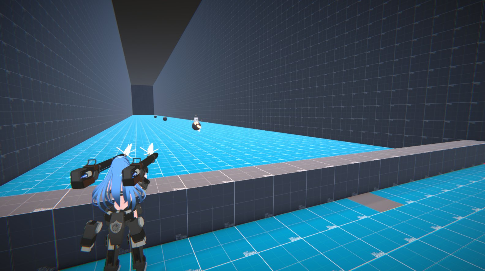
The bot in control of Bradamant, firing at strafing targets in the shooting range.
I wrote a C# bot inside Unity that takes control of Bradamant. It picks one of three base weapons (assault rifle, SMG, shotgun), randomises its stats, and fights test targets one at a time, aiming like the game's lock-on mode. When a target dies, or after 30 seconds, the result is written to a CSV file.
120weapon variants
36situations
~4 hof bot play
11 weapon stats varied: damage, crit chance and multiplier, pellets, fire rate, spread, recoil, recoil control, magazine, reload, bullet speed
The first hour of data was thrown away: running the game at 2× speed made fast weapons fire slower than they should, which would have taught the model something false. The bot was restarted at normal speed.
Targets moving at 35 m/s were also removed. They change direction faster than a bullet can reach them, so no weapon could hit them, and they added no information.
02
Load and clean the data
The raw file had 1,501 fights. Before modelling, I checked that every row was physically possible and kept only the columns a designer can actually change.
Check
Rows
Action
Target died before the bot fired (a stray bullet from the previous fight)
25
Removed
Weapon never hit the target once (DPS = 0, cannot take a log)
1
Removed
Target survived the 30-second limit
247 (17%)
Kept: these are real results
Columns the game derives from other stats (e.g. recoil ratio)
4 columns
Dropped: keep only the knobs a designer tunes
Final dataset: 1,475 fights × 14 features (3 situation + 11 weapon stats).
03
Define what "real DPS" means
The target is effective DPS = damage dealt ÷ time taken. It works for fights that ended in a kill and for fights that hit the time limit. Because values range from almost 0 to thousands, I predict its logarithm, which turns the long tail into a near-normal shape and makes errors relative ("off by ×2") instead of absolute.
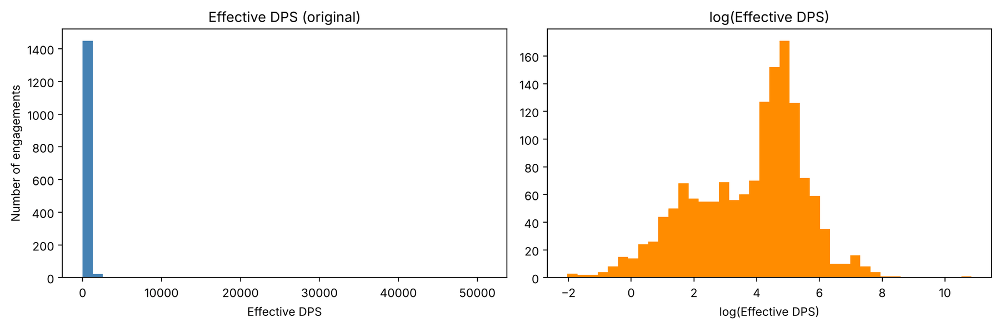
Left: raw effective DPS is extremely skewed. Right: after the log transform it is usable for regression.
04
Test the standard formula first
Before any machine learning, I measured the baseline every designer uses: damage × pellets × fire rate, adjusted for crits. If a model cannot beat this, it is not worth using.
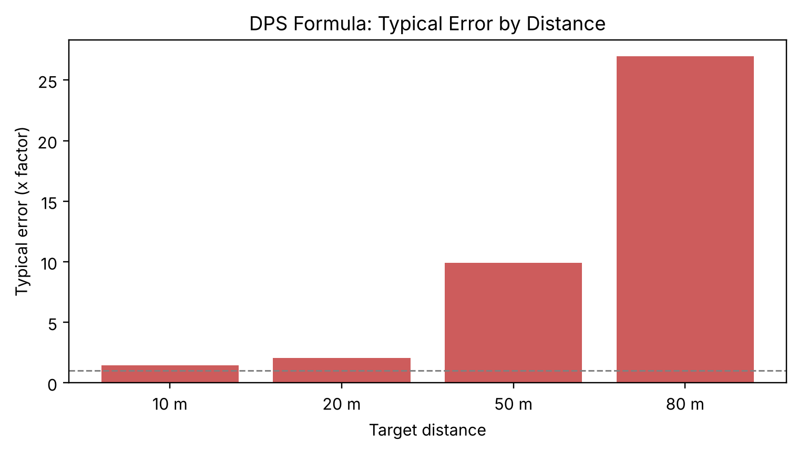
The formula is fine at 10 m but is off by about ×10 at 50 m and ×29 at 80 m: it assumes every bullet hits.
05
Train a Random Forest
A Random Forest (300 trees) learns the relationship between the 14 features and real DPS, including interactions the formula ignores, like spread only mattering at range.
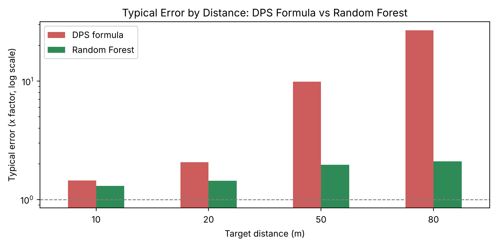
Error by distance (log scale). The model stays close to ×2 even at 80 m.
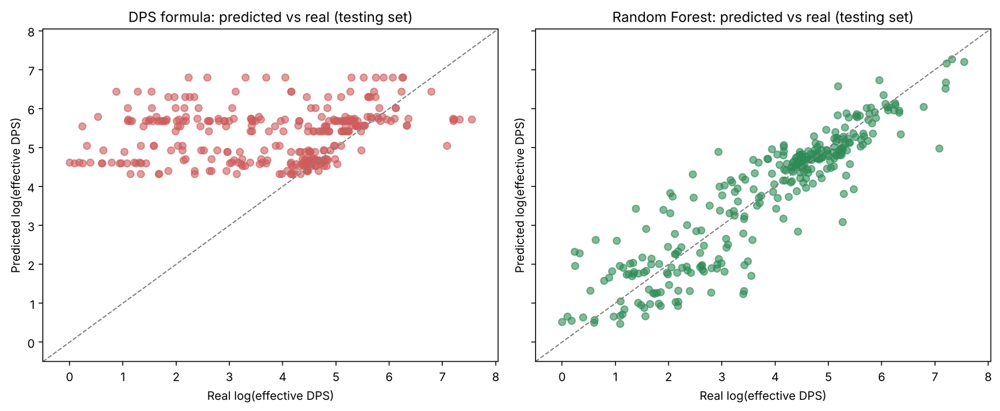
Predicted vs real on unseen weapons. The model's points follow the diagonal; the formula's do not.
06
Test it honestly: split by weapon
Each weapon fought in many situations. If those fights are split randomly, the same weapon ends up in both training and testing, and the model is graded on weapons it has already seen. A designer needs predictions for new weapons, so I used GroupKFold by weapon: every weapon is tested exactly once, by a model that never saw it.
Split method
Typical error
R²
Random rows (leaky)
×1.51
0.88
By weapon (honest)
×1.78
0.80
The leaky split looks better, but that improvement is fake. All results on this page use the honest split.
07
Combine the formula and the model
The formula already knows the easy part (damage × fire rate). What it misses is how many bullets actually hit. So Model B starts from the formula and lets the Random Forest learn only the hit efficiency on top of it.
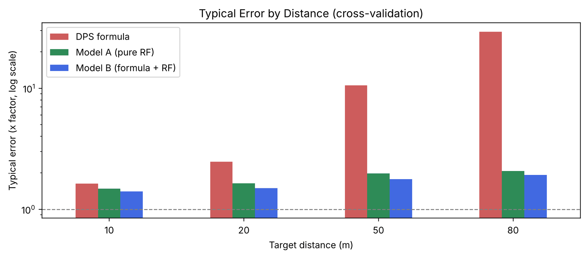
Cross-validated error by distance for all three approaches.
Approach
Typical error
R²
DPS formula
×6.00
−0.95
Model A: Random Forest
×1.78
0.80
Model B: Formula + Random Forest
×1.64
0.85
5-fold cross-validation by weapon. Model B wins at every distance.
08
Open the black box with SHAP
A prediction alone does not help a designer. SHAP splits every prediction into the contribution of each feature, so we can see which stats matter and in which direction.
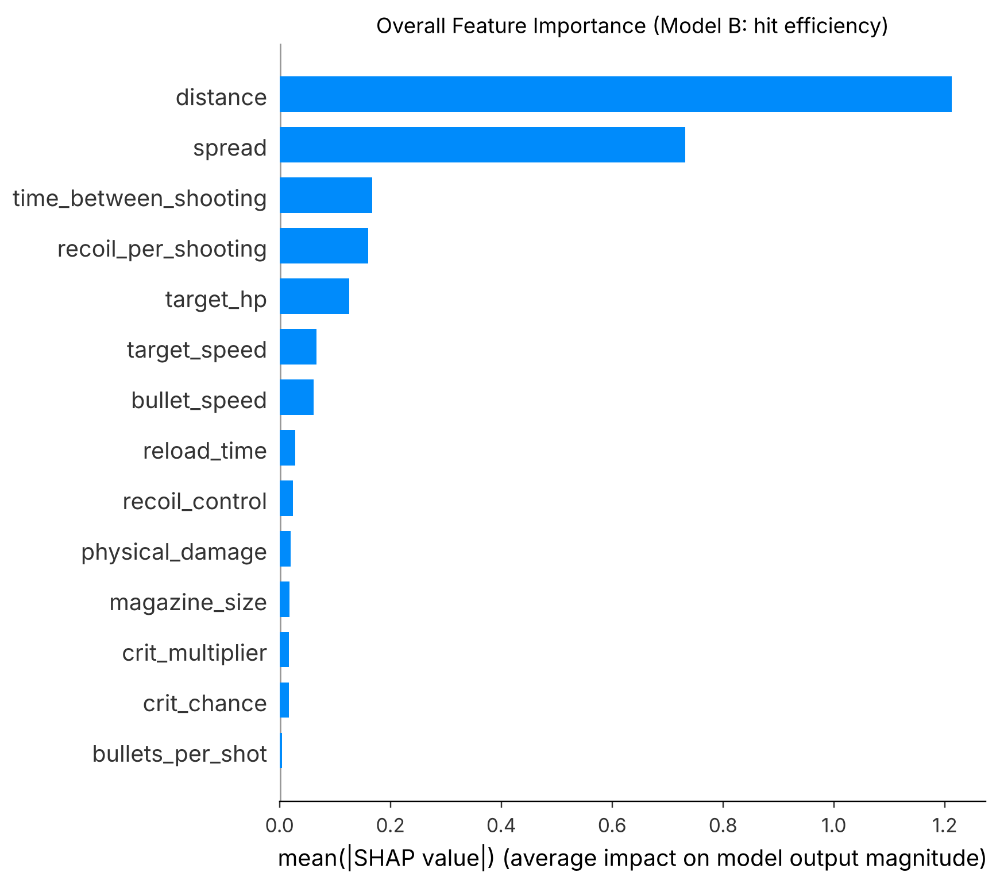
Overall importance for hit efficiency. After distance, spread is far ahead of every other stat.
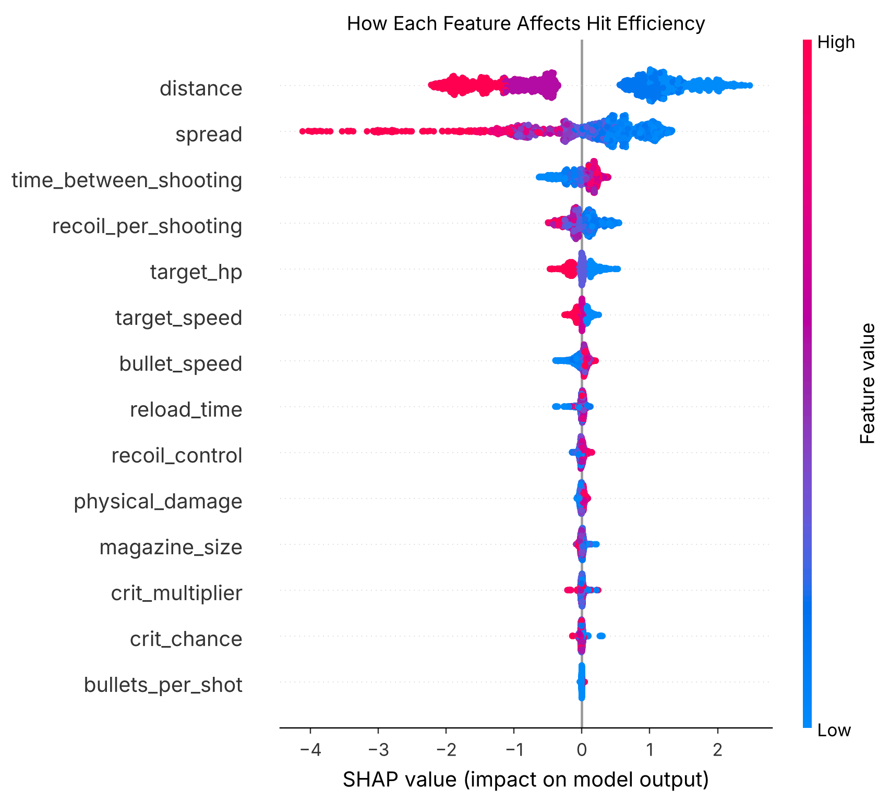
Direction: red is a high value. High spread (red) pushes efficiency down hard.
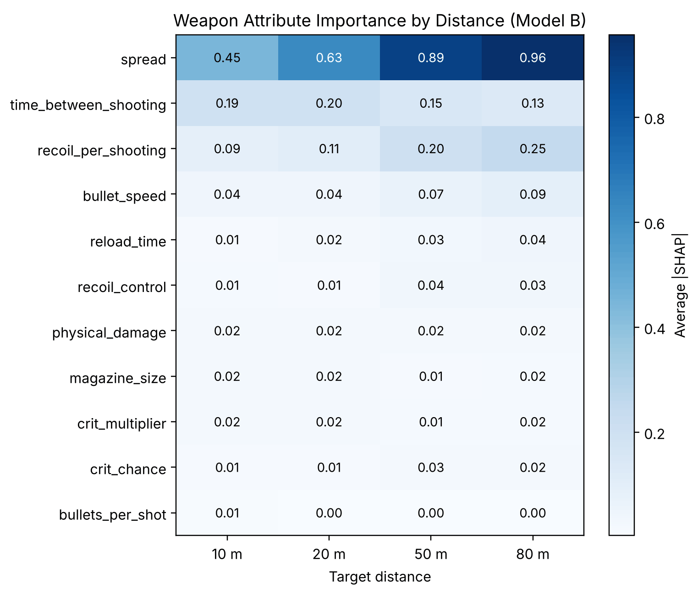
Spread's importance more than doubles from 10 m (0.45) to 80 m (0.96). Recoil also grows with distance.
09
Which stat matters most in each situation?
A designer's real question is specific: "At 10 m against a moving target, what should I tune?" I trained a model on real DPS (so damage and fire rate are included), then averaged SHAP importance inside each of the 12 distance × target-speed situations.
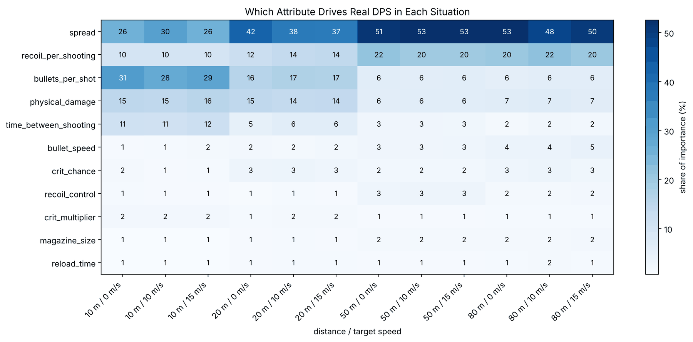
Share of importance (%) for each stat in each situation. Each column adds up to 100%.
Situation
1st
2nd
3rd
10 m, standing still
Pellets (shotgun) 31%
Spread 26%
Damage 15%
10 m, moving
Pellets (shotgun) 28–29%
Spread 26–30%
Damage 15–16%
20 m, standing still
Spread 42%
Pellets 16%
Damage 15%
20 m, moving
Spread 37–38%
Pellets 17%
Recoil 14%
50 m, standing still
Spread 51%
Recoil 22%
Pellets 6%
50 m, moving
Spread 53%
Recoil 20%
Damage 6%
80 m, standing still
Spread 53%
Recoil 20%
Damage 7%
80 m, moving
Spread 48–50%
Recoil 20–22%
Damage 7%
"Moving" covers 10 and 15 m/s; the two speeds give almost the same ranking (at 10 m, pellets and spread are effectively tied). "Pellets" has only two values in this data, so it effectively means "is it a shotgun".
Distance changes the answer; target speed hardly does.
Close range is decided by damage and pellets. From 20 m on, spread takes over, and at 50–80 m spread and recoil together make up about 70% of the importance, while damage drops to about 7%.
10
Dig into spread and fire rate
SHAP showed fire rate mattered, but the overall effect looked flat. Splitting the data by spread revealed why: two opposite effects were cancelling out.
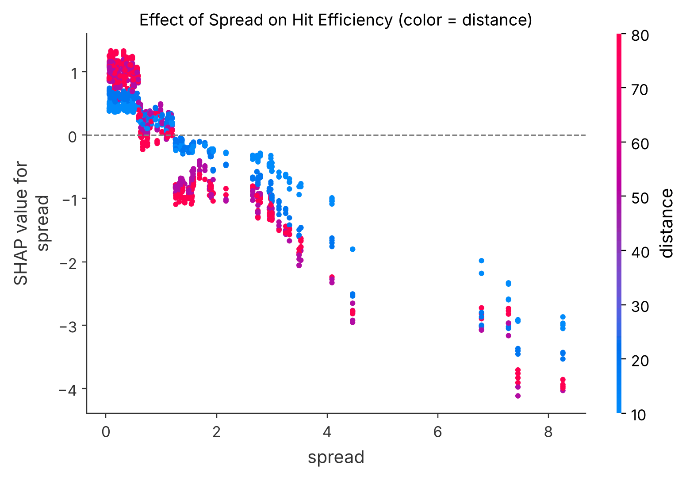
Hit efficiency falls steadily as spread grows, and falls faster at long distance (red).
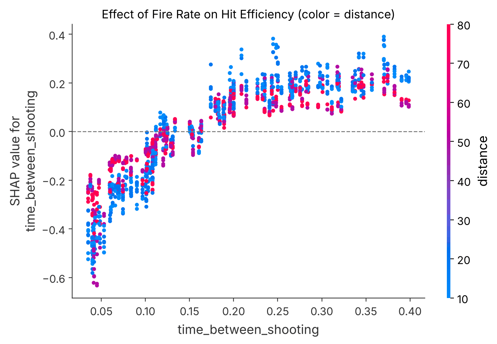
Very fast fire (short time between shots) lowers efficiency: recoil builds up before the bullets land.
Spread group
10 m
20 m
50 m
80 m
< 0.7° (accurate)
0.52
0.63
0.91
0.60
0.7–1.5°
0.82
0.91
0.77
0.45
1.5–3°
1.11
0.38
0.22
0.12
> 3° (inaccurate)
0.46
0.69
0.06
0.20
Measured gap in log efficiency between slow-firing and fast-firing weapons (no model involved). At 50 m, accurate weapons lose the most from firing fast; inaccurate ones barely notice.
11
Flag "OP" weapons before anyone plays them
A designer does not need a number for every situation; they need a warning: "this weapon is too strong." So I turned the model's predictions into a clear rule.
Definition: a weapon is OP if, at 3 of the 4 distances, it kills in 70% or less of the typical time.
"Typical" is the median kill time of all weapons in the same situation (same distance, target HP and target speed), so a 10 m fight is only compared with other 10 m fights. A weapon that dominates only one range (a specialist, like a close-range shotgun) is not flagged; one that wins almost everywhere is.
How it was tested: for each weapon, a model that had never seen it predicted its kill time in all 36 situations, and the rule was applied to those predictions. The same rule was then applied to the bot's real fights to check the answer.
89%of flagged weapons were really OP
77%of real OP weapons were caught
92%of all 120 weapons judged correctly
Really OP
Really normal
Model says OP
24
3
Model says normal
7
86
120 weapon variants, each predicted by a model that never saw it (5-fold cross-validation by weapon). Stricter rules (50% or 60%, or 4 of 4 distances) agreed less with reality, so 70% at 3 of 4 distances was kept.
Note: "typical" here means typical for this test pool of randomised weapons, which is why 22% of them are flagged. None of the three original weapons is flagged. In a real game, the reference should be the official weapon list.
12
Decide when to stop collecting data
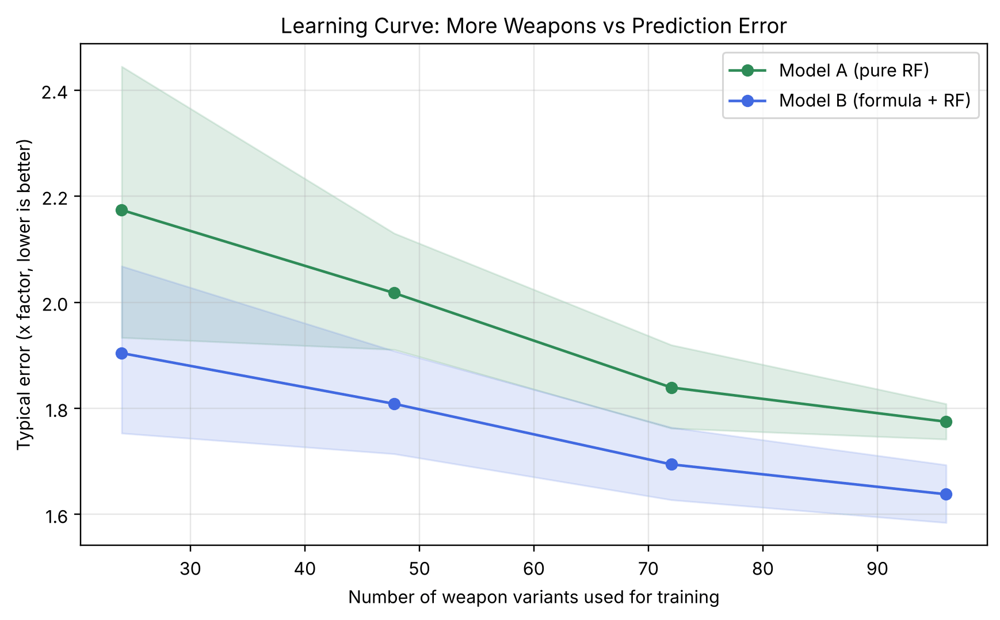
Error vs number of training weapons. Shaded bands show the spread across folds.
The bot could run forever, so I needed evidence for when to stop. I retrained both models on 25%, 50%, 75% and 100% of the weapons and checked whether the error was still falling.
At my last two checkpoints, the bot had added 14 more training weapons and Model B's error stayed at ×1.64. The curve had flattened, so I stopped the bot and spent the remaining time on analysis.
Try It
Is Your Weapon OP?
Enter a weapon's stats and the trained model predicts how fast it kills at each distance, compared with a typical weapon, then applies the OP rule from Step 11. It runs entirely in your browser.
—Pick a preset or enter stats.
Distance
Predicted kill time 150 HP target
vs typical
Fast?
Findings
What the Model Told the Designer
FINDING 01
Spread Decides Long-Range Power
From 20 m on, spread is the most important stat, and at 50–80 m it is about half of all importance. Raw damage barely matters at range.
10m
20m
50m
80m
FINDING 02
Recoil Drags Down Accurate Guns
At 50 m, accurate weapons lose the most from firing fast: recoil builds up and pulls their shots off target. Inaccurate weapons barely notice.
Fire rate × spread × distance
FINDING 03
Recoil Matters at Long Range
Weapon recoil becomes significantly important in long-range combat: its share of importance doubles from about 10% at 10 m to over 20% at 50–80 m.
10% → 20%+
What this means for balancing
Close-range weapons: balance with damage and pellet count.
Long-range weapons: balance with spread and recoil. Changing their damage does little.
Recoil: a key tuning knob for long-range weapons, much less so for close-range ones.
Limits & Next
What Comes Next
Known Limits
The bot aims perfectly, so it is a "best case" player, not a real one.
Targets strafe in a fixed pattern; very fast targets were left out because nothing could hit them.
Fights where no bullet ever hit cannot be put on a log scale, so the model never sees a completely useless weapon.
Recoil control was only varied by ±500. The bot dual-wields, and that range was too small to offset two weapons' recoil, so this test cannot say how much recoil control matters.
The importance numbers show how much a stat matters, not whether raising it is good or bad; the SHAP direction plots answer that.
Next Steps
Compare the bot's results with real player data.
Run the model as an automatic balance check on every build.
Test design changes before making them: predict, then let the bot confirm.